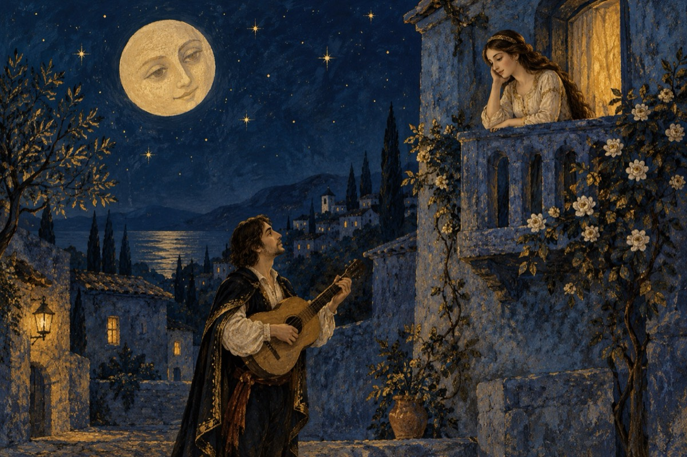

Dacă-aș fi
Dacă-aș fi un Cupidon
Mi-aș îndrepta săgeata către tine
De-aici de pe-nvechitul tron
Gustând din fericire!
Le-aș pune aripi la săgeată,
Cu ea să zbor și eu
Și dragostea-mi nesăturată
Să o primesc ca darul tău!
Dar eu nu sunt un Cupidon.
Ci sunt un trubadur modern
Îmi iau chitara-i dau un ton
Și la balcon s-apari te chem!
Sunt trubadurul rătăcit
Și-ți cânt o serenadă-n clar de lună
Vreau să iubesc, să fiu iubit,
Coboară și braț la braț să mergem împreună!
Refren:
Și orice-aș fi
De-ar fi să fiu
Te voi iubi
Te voi iubi mereu!
Că mă iubești și tu o știi,
De dragul tău, de dragul tău!
Vasile Groza
Apare și în: Poezii de suflet.